Old Money
The old money aesthetic imitates fahsion styles of
the upper-class people who have inherited their wealth from previous generations.
These people mostly wear clothes from designer brands that do not explicitly show their logos.
Thus, the old money style is associated with clothes that are in high-quality and do not look
extravagant but instead simple. This style creates a classic and elegant mood that
also comes from high-class people.
Gold jewlery is a often used as accessories for the old money style.
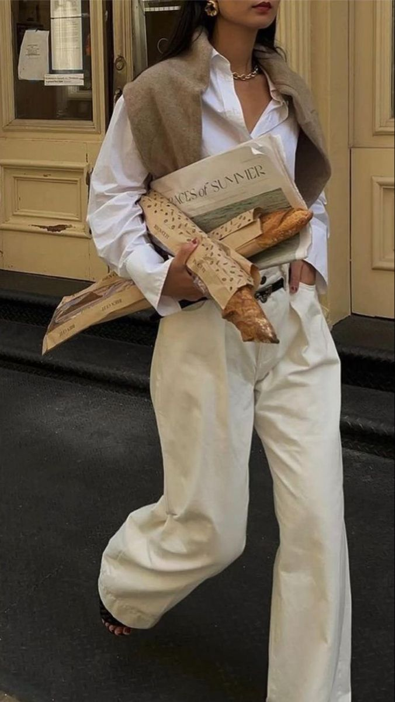
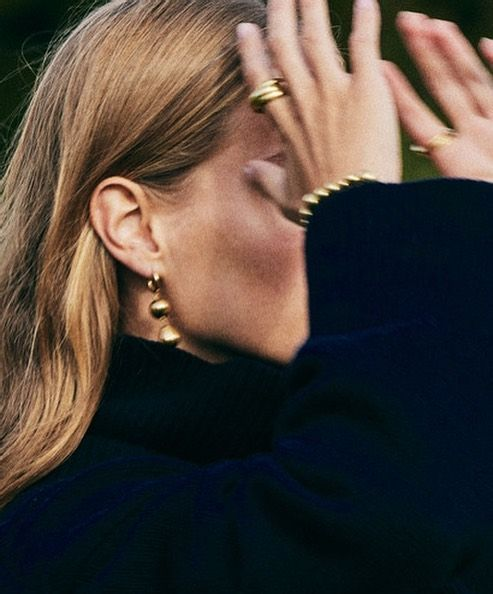
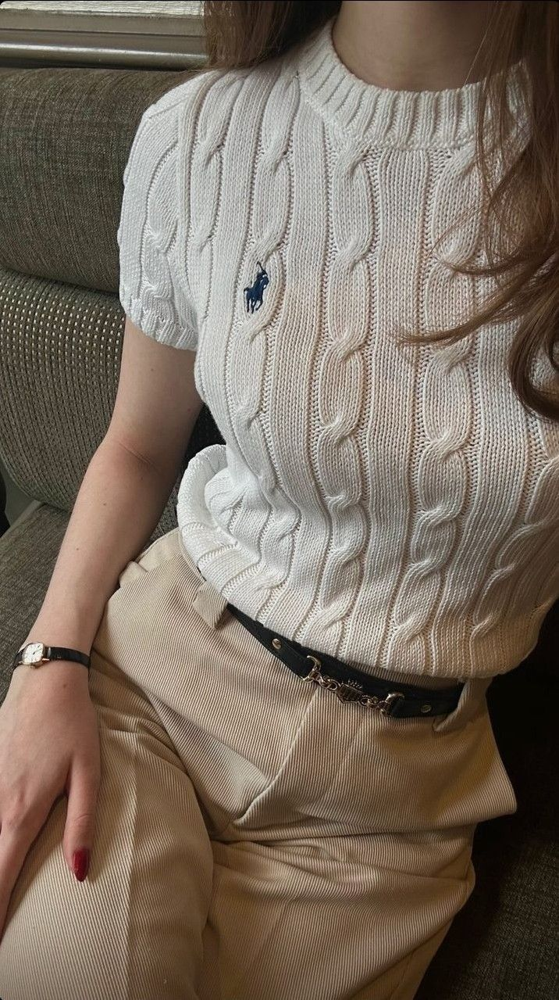
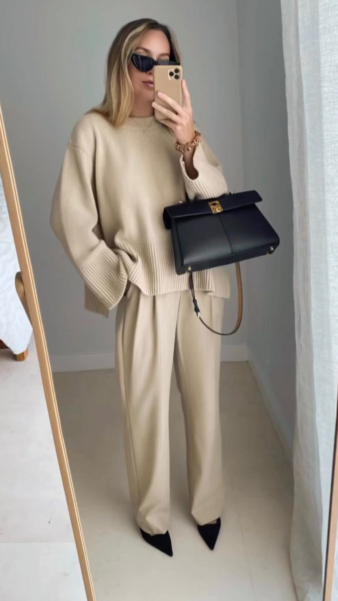
Office Core
The office core style is derived from business attire
people wear for work, which convey a formal and modern mood. Many of these outfits use black, white, gray, etc.,
which are also trending colors this season. The office core style also incorporates various
outfits that are currently trending, such as collared shirts, blazer jackets, suits, belts, and loafers.
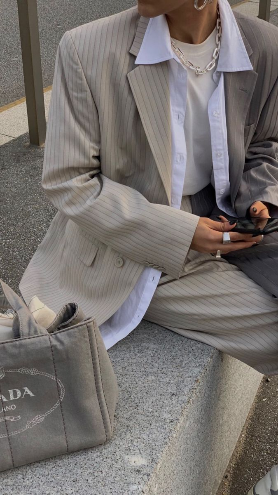
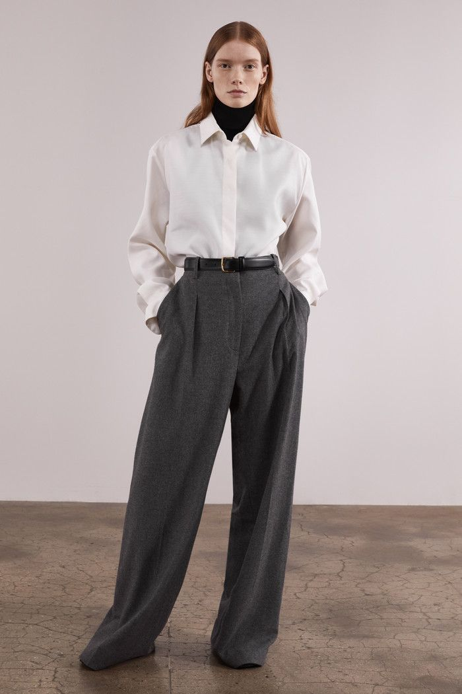
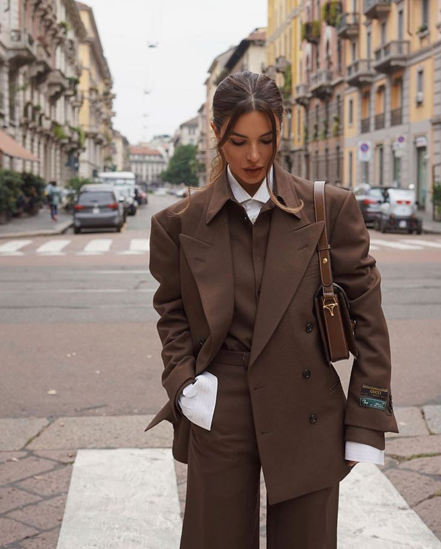
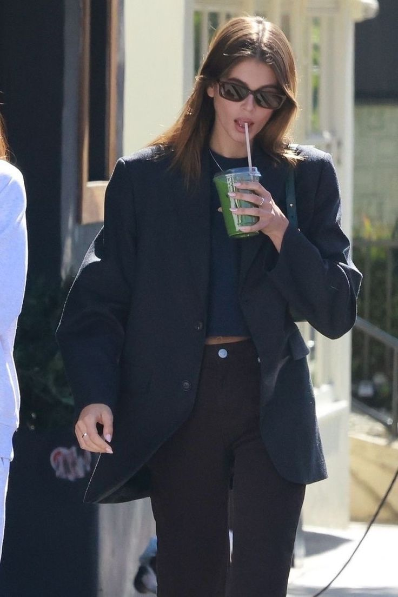
Ballet Core
The ballet core style has been in popularity since the 2022 season. Unlike the old money and office core styles which give simple and formal looks,
ballet core has a cute and lovely mood. Inspired by ballet outfits such as wrap
tops, skirts, tutus, leg warmers, and ballerina flats, ballet core is associated with designs that reveal our body silhouettes.
Many of these attire use flowy types of fabric such as chiffon and satin.
Ribbons and laces are also commonly used in ballet core styles as decorations.
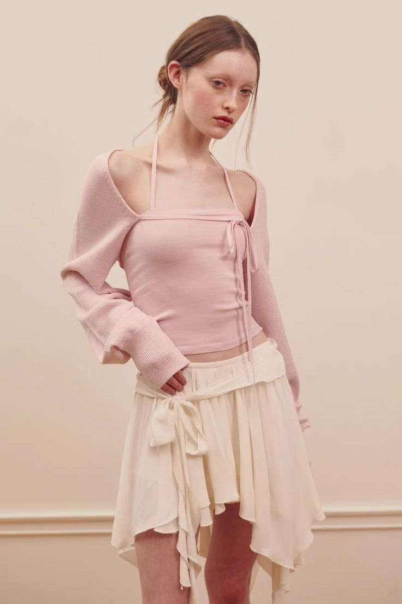
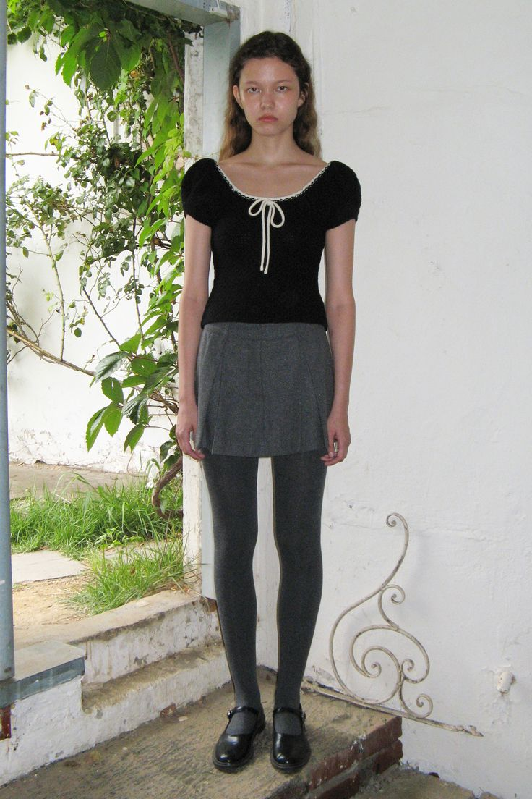
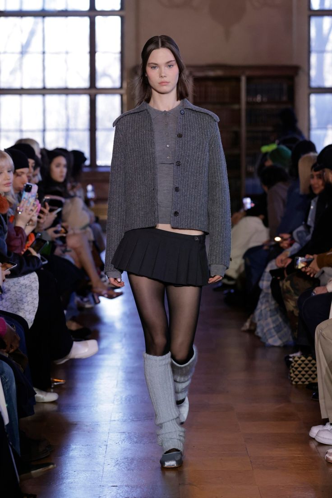
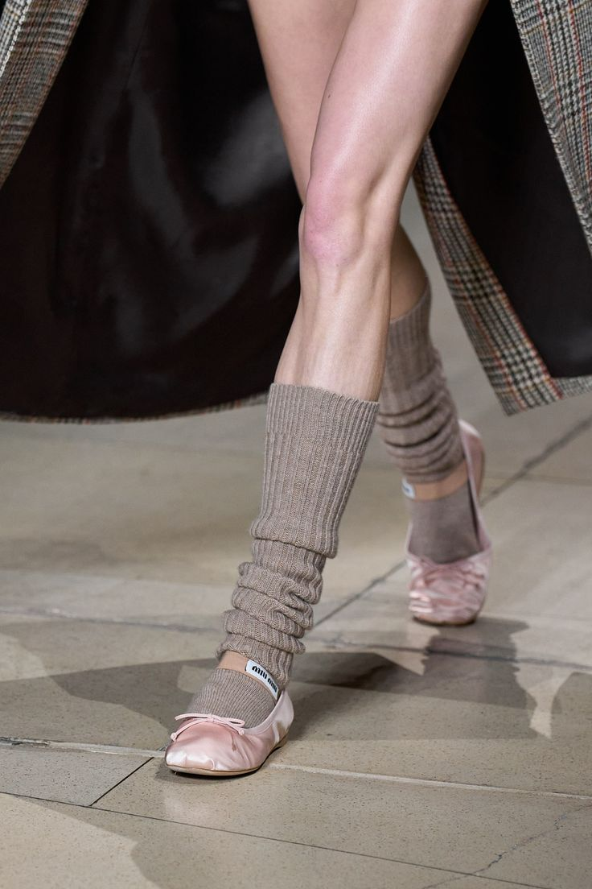